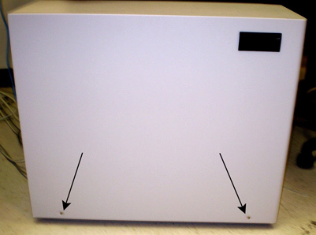
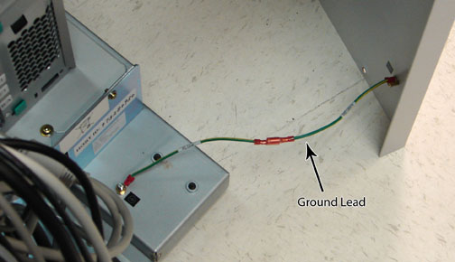
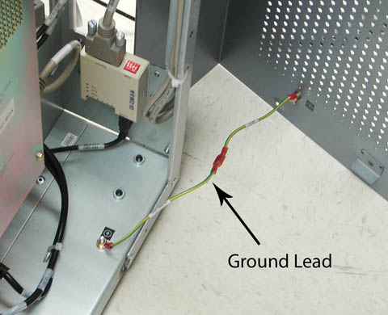
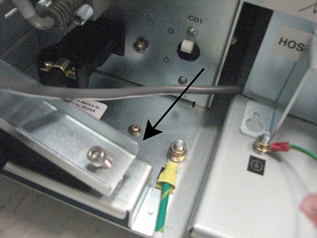
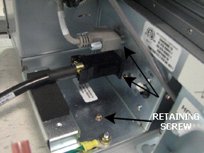
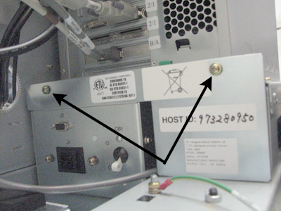

Operating Documentation
Direction 5670000, Rev# 1
Module Version 5.0, Version Date 11/18/08
Operating Documentation |
| ||||
| Electrocution Hazard! | ||||
| Hazardous voltages exist in the goc when energized. | ||||
| before beginning any work, shut down software if still running. lockout/tagout power to the GOC before Continuing. Please note: the GOC supports an optional ups. please confirm your respective site configuration. |
| Condition | Reference | Effectivity |
|---|---|---|
Host Computer and GOCAA Powered off (see Powering off Host and GOCAA for details) | - | - |
Click [Toolbelt] icon.
On the Service Desktop Manager, click [System Shutdown].
Confirm shutdown by clicking [OK].
Wait for the system to indicate on the monitor that it is safe to power off the computer before proceeding. It usually takes about 90 seconds for this message to appear.
Verify Power indicator is off. Power switch will turn back on (see Illustration 1). Shut off host circuit breakers on the front of the PDU (see Illustration 2).
Move the HOST circuit breaker down to disconnect power (see Illustration 3).
Shut down system applications if still running. Lockout/Tagout power to the GOC before continuing.
Remove the screws that secure the left and right side panels of the GOC. (See Illustration 4 and Illustration 5).
Illustration 4: GOC Left Panel

Verify that power is off by pressing Power button. See Illustration 2
Disconnect ground cables from both side panels. See Illustration 6 and Illustration 7.
Illustration 6: Left Side Panel Ground Lead

Illustration 7: Right Side Panel Ground Lead

Remove both GOC side panels and set aside.
Remove strain relief plate from power cable. See Illustration 8.
Illustration 8: Strain Relief Plate

Disconnect the power cable, and connector, from the GOC Power Distribution Supply. See Illustration 9.
Remove the remaining screw from the plate. See Illustration 9.
Illustration 9: Power Cable and Connector

Remove two (2) screws from the side of the GOC Power Distribution Supply and disconnect AC power cables from PDU. See Illustration 10.
Illustration 10: Disconnect AC Cables

Remove plate at rear of the GOC Power Distribution Supply by removing two (2) screws at the top of plate and lifting it upward. See Illustration 11.
Illustration 11: Remove Plate

Carefully slide the GOC Power Distribution Supply out of the GOC.
Insert the replacement GOC Power Distribution Supply. Reverse the preceding steps to properly install the replacement GOC Power Distribution Supply.
Turn the host and PC circuit breakers on the PDU back to the ON position (move the breakers to the right (see Illustration 2).
Start the host computer by pressing the ON button (see Illustration 1).
Log in and verify proper operation of the system by entering your user name and password.
When the system is fully booted, perform a scan to ensure proper operation of the system.